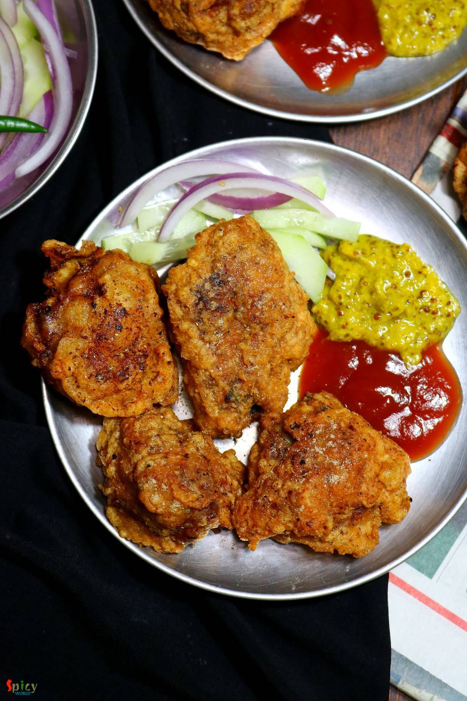

Simple and Easy Recipes
Chicken Pokora (Pakora) / Batter fried Chicken
© 2016 Spicy World, Published on: Dec 19, 2019
How about a crazy snack during winter evening?? Ohh yeaah time for some crispy, crunchy chicken pakora! This is the perfect 'pokora' recipe ever. In Kolkata we get this kind of chicken pokora from fast food centers. But according to me the best homemade pokora maker is my mom. My friends, our relatives, everyone is a fan of my mom's pokora. They always become spicy, soft, juicy and yummy. Do give this recipe a try and let me know how it turned out for you.
 / Batter fried Chicken")
Ingredients
- 600 grams of boneless chicken cut into chunks.
- 2 Tablespoons of ginger garlic paste.
- 2 Tablespoons of black pepper powder.
- 2 Tablespoons of red chili powder.
- Salt as per your taste and pinch of sugar.
- 2 Tablespoons of yogurt.
- 2 Tablespoons of lemon juice.
- 1 or 2 eggs.
- 4 Tablespoons of cornflour.
- 2 Tablespoons of all purpose flour.
- 2 Tablespoons of grated garlic and green chilies.
- 2 Teaspoons of chaat masala.
- Oil for frying.
 / Batter fried Chicken")
 / Batter fried Chicken")
Steps
Add ginger garlic paste, salt, red chili powder, pepper powder, sugar, yogurt and lemon juice into the chicken. Mix well and keep in the refrigerator for 4 hours or overnight.
In a mixing bowl, add egg, cornflour, all purpose flour, salt, grated garlic and green chili. Mix well and make a smooth batter.
Dip one chicken into the batter and drop them gently in medium hot oil.
Pour little more batter onto the chicken.
Fry for 2 minutes, then flip them over, bring the flame to high and fry another 2 minutes.
Then take them out from oil and keep them on tissue paper.
Sprinkle some chaat masala all over the pakoras.
Your chicken pokora is ready to serve.
Serve this hot with salad, ketchup and kasundi ..
 / Batter fried Chicken (Final)")